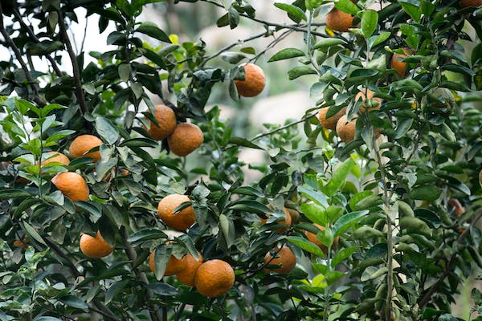
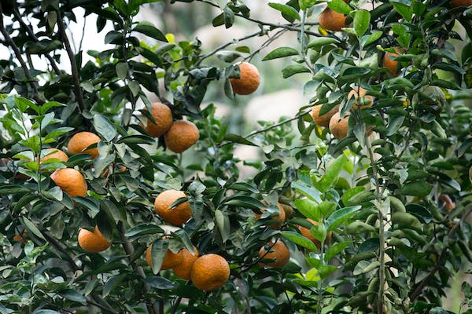

.png)

Our Motive
The main Motive of greenfarm is to deliver fresh fruits and vegetables to those who not able to buy fruits and vegetables
from Market.Greenfarm provides you varities of fruits and vegetables to you at a fair price and Organic.In these days all run
for their work they dont have time to buy fruits and vegetables from market.Today we buy everything from
Online from groceries to dress.Here we provide fresh fruits and vegetables grown in terrace without using any harmful
chemicals like pesticides.In these days we cannot find organic friuts and vegetables anywhere so this platform enables you
to stay healthy by eating organic food.The Wise Man should consider that health is the greatest of human blessings.
Let food be our medicine.

Why we choosen Terrace farming?
Fruits and Vegetables can be grown anywhere.Why particularly terrace farming is because,it is a new revolution that every
single individual
take responsibility to grow plants even for their needs without depending from market or from shop. This might be very new form of selling but
it also enables a opportunity for people without job.For women's its a opportunity to
enrole themselves in this work so that they may earn for
them without depending on their husbands.People who have terrace
farming cultivation can come to my Greenfarm website and register their
information and details and also they can posts
their products so that everyone can buy from this platform.
 
